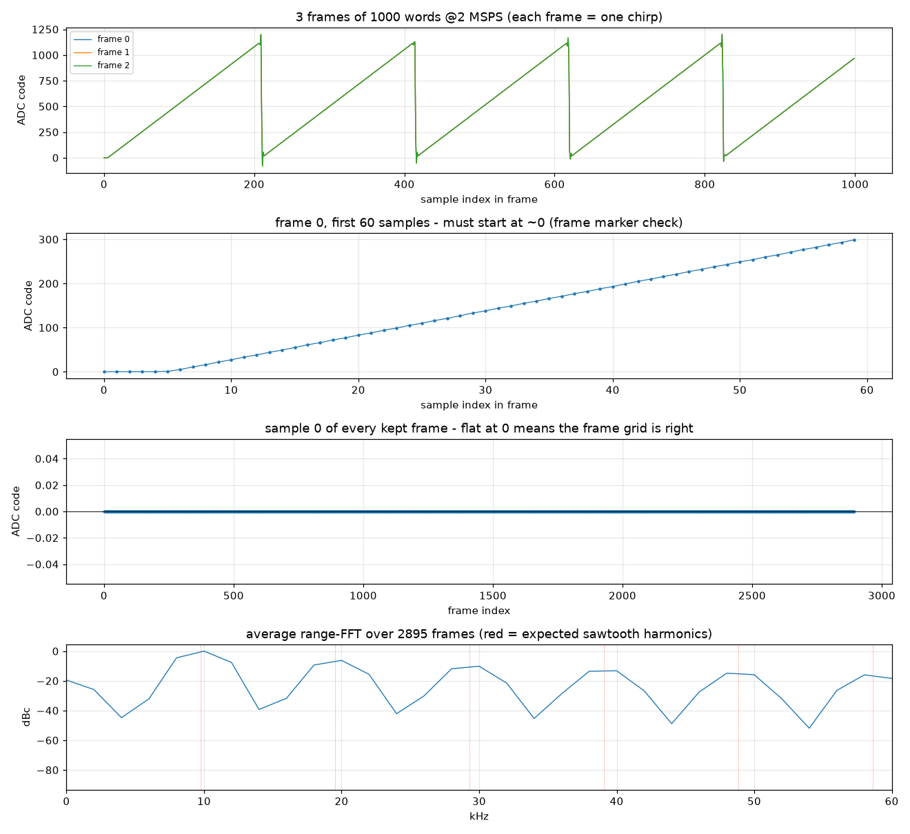
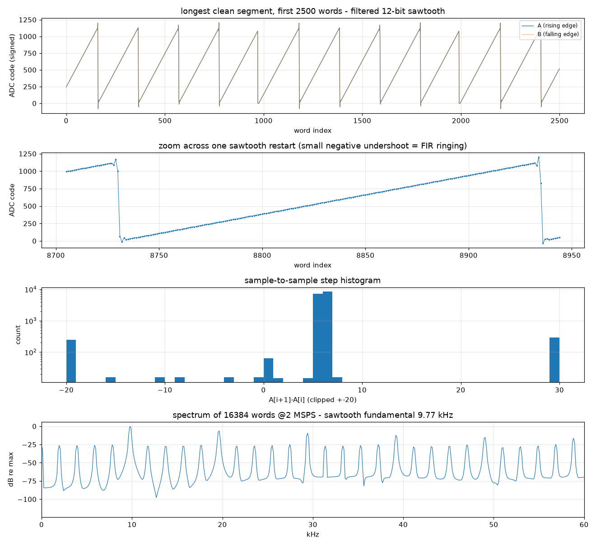

本工程源自开源项目 ckflight/FMCW3：一颗 Xilinx Artix-7（原设计为 FTG256 封装）负责 FMCW 雷达的数字后端——ADC 采集、FIR 抽取、斜坡（ramp）时序控制、USB 上传，配合 ADF4158 锁相环与 LTC2292 双通道 ADC 组成一套 5.8 GHz FMCW 雷达前端。
我手上没有射频前端（没有 ADF4158、没有 LTC2292、也没有原设计的 FT2232H 双通道 USB 芯片），但有一块 XC7A35T-FGG484 开发板。因此本阶段的目标是：
在不接任何射频硬件的前提下，用 FPGA 内部产生的"假 ADC 数据"，把原工程的数字后端完整搬到这块板子上跑通，一直做到 PC 端能接收、能切帧、能做 FFT。
这条链路一旦跑通，"有真实射频前端"只是把假数据换成真数据的问题，数字链路本身不再有未知数。
本阶段结束时应能回答四个问题：
四个问题在本报告中全部得到肯定答复，详见第三、五章。
| 里程碑 | 内容 | 验收证据 | 状态 |
|---|---|---|---|
| M1 | 工程迁移与器件核对 | part 改为 xc7a35tfgg484-2；Block Design 器件同步；IP 升级完成 | 完成 |
| M2 | lab 顶层综合、实现、烧写、ILA 在线验证 | WNS 2.083 ns；LUT 40.22%、FF 18.40%、BRAM 51%、DSP 14.44%；ILA 抓到 RAMP/GAP 状态迁移与 mem 缓冲生效 | 完成 |
| M3 | PC 端首次收到真实数据 | 5 秒收到 27,875,840 字节，稳定 5.31 MB/s；文件头 FMCW 校验通过 | 完成 |
| M4 | 定长帧 + 帧头 + 每帧 FFT 全部打通 | 3309 个帧头；2883 帧可用；帧首样本 min=max=0；平均 range-FFT 出现 9.766 kHz 整数倍谐波梳（1/n 衰减） | 完成 |
xc7a35tftg256-1（FTG256 封装），与本板 FGG484 封装不符，改为 xc7a35tfgg484-2；Block Design 内的器件字段同步更新。upgrade_ip [get_ips] 与 generate_target all 解决。lsusb 中显示为 "Future Technology Devices International"（不是 "FTDI" 字样），序列号 FTC7EQO0，PC 端脚本以序列号选设备。| 时钟 | 频率 | 用途 |
|---|---|---|
板载 sysclk | 50 MHz | clk_wiz 输入，约束 20.000 ns |
clk_40mhz | 40 MHz | 假 ADC 计数器、双沿采样、FIR、control 状态机 |
clk_100mhz | 100 MHz | 原 MicroBlaze 域（本阶段保留但数据通路不使用） |
usb_clkout | 60 MHz | FT232H 回送的同步 FIFO 时钟，约束 16.667 ns |
新建 FMCW3.srcs/constrs_1/new/lab_pinout.xdc，与原有 pinout.xdc（原板 FTG256 引脚）二选一启用。
踩坑记录：XDC 里写中文注释和长破折号会导致该文件进入 Vivado 的 "Syntax Error Files" 列表，约束整体失效。改为纯 ASCII 注释后通过。
| 信号 | 引脚 | 电平标准 | 说明 |
|---|---|---|---|
| sysclk | R4 | LVCMOS15 | 50 MHz 板载时钟 |
| reset_n / led1 | U7 / V9 | LVCMOS15 | 复位、心跳灯 |
| usb_data[7:0] | C17 F15 F18 E18 E21 D21 F21 E22 | LVCMOS33 | FT232H 数据总线 |
| usb_rxf / usb_txe | F16 / E17 | LVCMOS33 | 可读 / 可写标志 |
| usb_rd / usb_wr / usb_oe | F19 / F20 / D19 | LVCMOS33 | 读选通 / 写选通 / 输出使能 |
| usb_siwua / usb_clkout | G21 / E19 | LVCMOS33 | 发送立即 / 60 MHz 同步时钟 |
top_module_lab.vhd不修改原有 top_module（保留可作为将来接真射频的入口），新增一个实验顶层，内部包含：
adc 模块的 adc_data 输入，取代 LTC2292。config_done 恒 '1'、ramp_configured 恒 '1'、sampling_done 恒 '0'，即不需要 PC 下发配置包、也不需要 MicroBlaze 介入，上电即连续采集。Vivado 2025.2，时序收敛，资源占用情况：
| 指标 | 数值 | 说明 |
|---|---|---|
| WNS（最差建立时间裕量） | 2.083 ns（后续版本 2.680 ns） | 正裕量，时序收敛 |
| Slice LUT | 40.22% | 其中约 1000 LUT 用于 32 位 × 1000 采样缓冲（分布式 RAM） |
| Slice Register | 18.40% | |
| Block RAM | 51.00% | 主要是 MicroBlaze 的 LMB BRAM |
| DSP | 14.44% | 两个 FIR 编译器实例 |
烧写成功后板载 LED 以 led_cnt(23) 心跳闪烁，确认时钟与复位正常。
用 ILA 在真实硬件上抓取状态机行为，确认了三件事：
0x005（RAMP，斜坡采集）→ 0x004（过渡）→ 0x0F4（GAP_WAIT，ADC 关闭）→ 0x0F6 ⇄ 0x0F2（USB_TX_IDLE 与 USB_TX_PULSE 交替）。probe0 在 00 ⇄ D7 之间跳变，对应存储字 0x00D700D7，说明按 MSB 先发、每字 4 字节。0x00D7，而此刻 FIR 输出已涨到 0x01AE —— 证明"斜坡期间存、间隙期间发"的缓冲机制确实在工作。踩坑记录：最初设置的 ILA 触发条件 s_probe3 == 0x001 永远不触发，因为该状态组合（write_n=0 且 chipselect=0 且 muxout=1）在逻辑上不可达。改用可达到的条件（0x800、0x005）后正常。
PC 端沿用工程自带的 FMCW3_record.py（pylibftdi），把 DEVICE_ID 改为 FTC7EQO0，用 ftdi_set_bitmode(0xFF, 0x40) 把 FT232H 切到同步 FIFO 模式。首轮结果：
RX 1024 bytes DATA 27875328 bytes 5.31 MB/s
RECORD_TIME reached: 5 s. Ending reception.
SAVED: record.bin
TOTAL BYTES: 27875840
DATA BYTES : 27875328文件结构 = 512 字节 info sector（FMCW 魔数 + 小端参数）+ 其后纯字节流，没有帧头。
因为原始数据没有帧头，必须先用"已知答案"的信号反推。测试信号是 12 位锯齿计数器，周期已知（4096 / 40 MHz = 102.4 µs），因此可以反推采样率。逐层验证得到六条结论：
| # | 结论 | 证据 |
|---|---|---|
| 1 | 字格式 = A<<16 | B，且 A/B 是有符号 int16 | 锯齿换向时 FIR 下冲，出现 0xFFFD = -3；按无符号解析会误判 44% 的好数据 |
| 2 | 采样率实测 2.002 MSPS，与设计 40 MHz / 20 一致 | 实测锯齿周期 204/205 个样本 ÷ 102.4 µs |
| 3 | 段内数据逐字节正确 | 步进 5.538 counts；线性拟合残差 rms = 0.288 counts（小于 1 LSB） |
| 4 | FIR 直流增益 ≈ 0.273 | 输入 4096 counts 斜坡，输出约 1118 counts |
| 5 | 存在字节滑移：431 次 / 5 秒（约每 1.6 万词一次） | 丢 1 字节后 4 字节帧持续偏移；全局对齐匹配率仅 56%，按窗跟踪相位后 96.6% |
| 6 | 帧长不固定（800~1000 抖动） | 上传 4000 字节需约 750 µs，但两段斜坡之间只留了 100 µs |
| # | 改动 | 目的 |
|---|---|---|
| 1 | usb_tx_full => s_tx_full | 恢复真实反压。原代码为调试 ILA 把该信号恒接 '0'，等于告诉状态机"FIFO 永远有空位"，FIFO 满时写入被静默丢弃 |
| 2 | MAX_ADC_SAMPLES = 1000 | 试图把帧长固定下来 |
| 3 | muxout 改为 510 µs 高 / 1000 µs 低 | 510 µs × 2 MSPS = 1020 个样本，略多于目标帧长；1000 µs 间隙足够发完 4000 字节 |
| 4 | 间隙期间把测试计数器清零 | 制造"帧起点标记"：每帧第 0 个样本必然接近 0，PC 可自证切帧是否正确 |
新数据 13.50 MB / 5 s（2.70 MB/s），与新的时序预算（4004 字节 / 1510 µs）精确吻合，采样率仍是 2.002 MSPS —— 说明时序那一半改对了。但字节滑移不但没消失，反而更密（814 次 / 5 秒，约每 4145 词一次），帧起点标记命中率只有 6.3%。
排查 usb_sync.vhd 的发送路径，其时序是确定性的（每个时钟弹一个字节），因此丢字节发生在 FT232H 的 USB 事务边界上（245 同步 FIFO 内部为 16 位缓冲，非整包长度的事务收尾容易吞/吐 1 字节）。这是芯片行为，靠调 FPGA 时序难以根治。
工程思路的转变：不再追求"字节永不丢"，而是让接收端能从任意位置重新同步。这是所有真实雷达与数据链路的标准做法。
在 control.vhd 中，每帧上传前先发 4 字节帧头：
每帧 = [F0 0D F0 0D] + N 个样本字 （N 由 ramp 长度决定，当前为 1020）选择 F0 0D F0 0D 的理由：有效样本的高字节只可能是 0x00..0x0F（滤波后幅度在 ±4000 内），因此 0xF0 出现在高字节位置物理上不可能，搜索该魔数零误判。
PC 端相应改为：搜索帧头 → 从帧头后取 N 个样本 → 帧长 N 由帧头间距自动推断（协议自描述，不再与 FPGA 常量硬耦合）→ 逐帧做 range-FFT。
| 编号 | 问题 | 根因 | 解决方案 | 效果 |
|---|---|---|---|---|
| P1 | 改器件后 IP 全部锁定 | IP 与器件型号绑定 | upgrade_ip + generate_target all | 解除 |
| P2 | 约束文件不生效 | XDC 中含中文与长破折号，被判语法错误 | 改为纯 ASCII 注释 | 解除 |
| P3 | ILA 触发条件永不满足 | 所设状态组合逻辑上不可达 | 改用可达状态编码作为触发 | 解除 |
| P4 | USB 无法通信 | 原设计假设 FT2232H 双通道，本板为 FT232H 单通道 | 以序列号选设备，脚本切同步 FIFO 模式 | 通信成功 |
| P5 | 约 44% 数据被判为"垃圾" | FIR 输出为有符号 16 位，PC 按无符号解析 | 按 int16 解析 | 误判归零 |
| P6 | 数据中段之后全部错乱 | 链路丢 1 字节 → 4 字节栅格永久偏移 | 先按窗口跟踪字节相位；最终用帧头重同步 | 见 P8/P10 |
| P7 | 帧长在 800~1000 抖动 | 上传 4000 字节需 750 µs，间隙只有 100 µs，下一段斜坡开始时状态机还在发数据 | 间隙加长到 1000 µs；斜坡略长于目标帧长 | 帧长恒定 |
| P8 | FPGA 侧静默丢字节 | usb_tx_full 被恒接 '0'，FIFO 满时写入被丢弃 | 接回真实反压信号 | 该路径消除 |
| P9 | 帧长为 1020 而非设定的 1000 | VHDL integer range 0 to 999 在综合时不被强制，实际按 10 位计数器实现（可数到 1023）；ramp 产出 1020 个样本 < 1024，故不绕回 | PC 端改为从帧头间距反推帧长；FPGA 侧待改为真正饱和（见第七章） | 功能正常但存隐患 |
| P10 | PC 与 FPGA 帧长硬耦合 | 脚本里写死 N=1000 | 协议自描述：帧长由帧头间距推断 | 解耦 |
FPGA 每采到一对样本就打成一个 32 位字，拆 4 个字节发出：[A高][A低][B高][B低]。PC 端按"每 4 字节切一刀"还原。一旦链路丢掉 1 个字节，从那一刻起每 4 个字节都横跨两个真实样本，还原结果全部错乱。
迷惑之处在于错位后的字节看起来像"大小端翻转"（02 97 变成 97 02）。区分方法：真的大小端错误是全程一致的，而丢字节是"之前一直正确、某个位置之后全错"。如果误判成大小端去改字节序，将永远修不好。
数据产生率 = 2 MSPS × 4 字节 = 8.0 MB/s，而 USB 实测只有 5.31 MB/s。即使一个字节都不丢，也必然有一部分时间被上传占用。正确做法是把占空比压到带宽之下：本设计用"斜坡 510 µs + 间隙 1000 µs"，每帧 4084 字节，对应 2.70 MB/s，留出约一倍余量。
range 约束不是硬件约束signal sample_idx : integer range 0 to MAX_SAMPLES-1 := 0; -- 0..999
if adc_valid = '1' and sample_idx < MAX_SAMPLES then
sample_idx <= sample_idx + 1; -- 综合时不检查 range
end if;999 需要 10 位，于是综合出的计数器实际能数到 1023。本次 ramp 产出 1020 个样本（小于 1024），因此没有绕回，数据恰好正确——但这是侥幸正确：一旦 ramp 产出超过 1024 个样本，索引会绕回 0 覆盖开头数据，而且是静默损坏。必须改为显式饱和。
| 指标 | 第一版（原始逻辑） | 第二版（反压+时序） | 第三版（帧头，当前） |
|---|---|---|---|
| 数据量 / 5 秒 | 27.88 MB | 13.50 MB | 13.51 MB |
| 字节率 | 5.31 MB/s | 2.70 MB/s | 2.70 MB/s |
| 采样率实测 | 2.002 MSPS | 2.002 MSPS | 2.002 MSPS |
| 段内线性残差 | 0.288 counts | 0.289 counts | < 1 LSB |
| 帧长确定性 | 800~1000 抖动 | 恒定 1020（但未声明） | 恒定 1020，PC 自动推断 |
| 帧同步能力 | 无（全局对齐 56%） | 无 | 帧头同步，3307/3308 帧相位稳定 |
| 帧起点标记命中 | — | 6.3% | 100%（min=max=0） |
| 可用帧比例 | 无法切帧 | 0% | 87.2%（2883/3308） |
| FFT 验证 | 无 | 无 | 9.766 kHz 谐波梳，按 1/n 衰减 |
| 指标 | 结果 | 判据 |
|---|---|---|
| 帧头数量 | 3309 | 5 s ÷ 1.51 ms ≈ 3310 |
| 帧头间距 | 中位数 4084 字节，86.8% 恰等于该值 | 恒定 |
| 每帧字节相位 | 3307/3308 帧为 phase 0 | 不漂移 |
| 帧首样本 | 2883 帧 min = max = 0 | 精确对齐 |
| 斜坡斜率 | 中位数 5.5271 counts/word | 理论 5.54 |
| 帧率 | 660.9 帧/秒（1.51 ms/帧） | 510 + 1000 µs |
| 平均 range-FFT 峰值 | 9.80 / 19.61 / 29.41 / 39.22 / 49.02 / 58.82 kHz | 9.766 kHz 整数倍 |
| 峰值衰减 | -6.0 / -9.6 / -12.1 / -14.0 / -15.7 / -17.0 / -18.2 dB | 锯齿波 1/n 谐波特征 |


| 文件 | 作用 |
|---|---|
FMCW3.srcs/sources_1/new/top_module_lab.vhd | 实验顶层：假 ADC、内部 muxout、定长帧时序、帧起点标记 |
FMCW3.srcs/sources_1/new/control.vhd | 斜坡状态机（已加入帧头逻辑与真实反压） |
FMCW3.srcs/constrs_1/new/lab_pinout.xdc | 本板引脚约束（纯 ASCII） |
pc/analyze_record.py | 数据取证：字节相位跟踪、滑移统计、采样率反推、线性拟合残差 |
pc/decode_frames.py | 帧头搜索 → 自动推断帧长 → 切帧 → 每帧 range-FFT |
pc/build_lab.tcl | 批处理综合/实现/出比特流，打印 WNS |
FMCW3.runs/impl_1/top_module_lab.bit | 当前比特流（WNS 2.680 ns） |
# 1) 综合 + 实现 + 出比特流
cd ~/myProjects/ISAC/FMCW3
vivado -mode batch -source pc/build_lab.tcl -nojournal -log pc/build_lab.log
# 2) 在 Hardware Manager 里 Program Device 烧写 top_module_lab.bit
# 3) 录数据（Python 环境为工程内 .venv）
cd ~/myProjects/ISAC/FMCW-RADAR-2v2
~/myProjects/ISAC/FMCW3/.venv/bin/python FMCW3_record.py
# 4) 切帧 + FFT 验证
cd ~/myProjects/ISAC/FMCW3
MPLCONFIGDIR=/tmp/mplcache .venv/bin/python pc/decode_frames.py ~/myProjects/ISAC/FMCW-RADAR-2v2/record.bin| 层级 | 格式 |
|---|---|
| 采样 | 40 MHz 双沿采样：A 取上升沿、B 取下降沿；各自经 120 抽头 FIR、抽取 20 → 2 MSPS，输出为有符号 16 位，直流增益约 0.273 |
| 字 | word = A<<16 | B，字节发送顺序 A高, A低, B高, B低 |
| 帧 | [F0 0D F0 0D] + 1020 个样本字 = 4084 字节 |
| 帧周期 | 1510 µs（斜坡 510 µs + 间隙 1000 µs）→ 约 661 帧/秒 |
| 文件 | 512 字节 info sector（FMCW + 小端参数）+ 连续帧字节流 |
目标：当前 FFT 看到的是锯齿波的谐波梳，虽然验证了数值链路，但没有"距离"的物理含义。把假信号换成频率可控的正弦后，FFT 峰值位置就等于设定的拍频，才能接上 FMCW 的距离公式。
方案：32 位相位累加器 + 正弦查找表（1024 点，可外挂 coe 初始化），累加器频率字
f_out = (f_word / 2^32) × 40 MHz 例如 100 kHz 对应 f_word ≈ 10 737 418
建议先取 100 kHz（落在 400 kHz 低通通带内、远离直流与抽取后 1 MHz 的奈奎斯特边界），并用一个常量便于修改。
验收标准：平均 range-FFT 的单峰落在设定频率 ±1 个频率分辨单元内（当前帧 1020 点 @2 MSPS，分辨率约 1.96 kHz），带外杂散低于 -40 dBc，帧首标记仍为 0。
工作量：约 30 行 VHDL，一次综合（约 8 分钟）＋ 一次录制验证。
问题：见 P9。当前"侥幸正确"依赖 ramp 产出样本数不超过 1024。
方案：把存数逻辑改为真正饱和（if sample_idx < MAX_SAMPLES-1 then sample_idx <= sample_idx + 1），并把 MAX_ADC_SAMPLES 设为 1020 使常量名副其实；同时把 PC 端帧长推断保留为兜底。
验收标准：把 ramp 故意加长到超过 1024 个样本，帧长仍严格等于设定值，数据无覆盖、无跳变。
建议：与 7.1 合并为同一次综合。
在 7.1 基础上，让每帧起始相位按固定增量旋转（模拟目标匀速运动引起的多普勒频移），然后对"帧间同一距离单元"做第二次 FFT：
验收标准：设定"目标距离 + 目标速度"后，RD 图峰值落在理论位置，且与公式 R = c·f_b·T/(2·BW)、v = f_d·λ/2 一致。
目前配置通路是旁路的（config_done 恒为 1）。若要由 PC 动态设定斜坡时间、带宽、帧长，需要：
helloworld.c 的字段解析（当前只解析了 3 个字段）；| 风险 | 说明与对策 |
|---|---|
| FT232H 事务边界丢字节 | 当前约每 7~8 帧丢 1 字节，被帧头机制隔离，可用帧 87.2%。若要提升，可让每次 USB 事务长度为偶数包，或把帧头扩展为"魔数 + 帧号 + 帧长 + 校验"，实现坏帧精确定位 |
| 帧长与 FFT 点数 | 1020 点不是 2 的幂，且锯齿周期 204.8 点不是整数。换成正弦信号后不影响峰值位置，但若要做零填充或高分辨率谱，建议把帧长取成 2 的幂并与 ramp 时长精确匹配 |
| 有符号与增益 | FIR 输出为有符号且直流增益约 0.273，做幅度/信噪比计算时必须乘回 1/0.273 |
| 分布式 RAM 占用 | 1000×32 位采样缓冲占用约 1000 LUT（占全片 40%）。若后续加大帧长，应改用 ram_style="block" 走 BRAM |
| 版本管理 | 仓库当前把 FMCW3.runs / FMCW3.cache / FMCW3.gen 一并纳入跟踪，每次综合都会产生大量无关改动。建议后续加入 .gitignore，只跟踪源码、约束、脚本与文档 |
| 项目 | 数值 |
|---|---|
| ADC / FIR 采样率 | 40 MHz / 20 = 2.000 MSPS（实测 2.002） |
| FIR 抽头数 / 抽取率 / 直流增益 | 120 / 20 / ≈0.273 |
| 斜坡（ramp）时长 | 510 µs（20400 个 40 MHz 周期） |
| 间隙时长 | 1000 µs（40000 个周期） |
| 每帧样本数 / 字节数 | 1020 / 4084（含 4 字节帧头） |
| 帧率 | ≈661 帧/秒（1.51 ms/帧） |
| 帧头魔数 | F0 0D F0 0D |
| 字节率 / 5 秒数据量 | 2.70 MB/s / 13.51 MB |
| 锯齿测试信号周期 | 4096 / 40 MHz = 102.4 µs（≈204.8 个样本） |
| 时序裕量 WNS | 2.680 ns（当前比特流） |